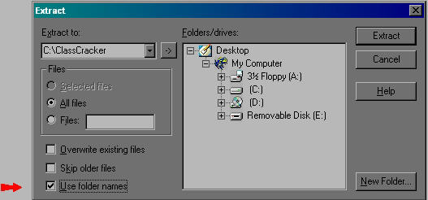

The following are important notes that explain how to install ClassCracker on your system.
Before ClassCracker can be run, Sun's Java Runtime Environment (JRE), Java Development Kit (JDK) or Java 2 Software Development Kit (J2SDK) must be installed on your machine. These can be downloaded from http://java.sun.com
ClassCracker 3 requires Java 1.4.x or Java 1.3.x to run.
ClassCracker 3 will not work with Java 1.0.2, Java 1.1.x or with Java 1.2.x.
ClassCracker 3 has been tested on Windows and Linux only. Although Java may be available for other operating systems, there is no guarantee that ClassCracker 3 will work correctly on those other systems.
This download of ClassCracker is used for both demonstration mode and for the fully functional purchased product. In DEMO mode, ClassCracker is fully functional except that only the first five methods in any class are decompiled. After purchase, two files will be emailed to you that will unlock ClassCracker and remore this restriction.
ClassCracker can be purchased from http://www.pcug.org.au/~mayon/
C:\ClassCracker (Windows)
C:\Java\ClassCracker (Windows)
/home/yourname/ClassCracker (LINUX)
It is important that the directory be named ClassCracker (case sensitive) exactly otherwise ClassCracker will not work properly. For example, ClassCracker will not work if it is stored in directories named classcracker or CLASSCRACKER.
jar xf classcracker3xy.zipIf you are using another unzip tool be sure to specify an unzipping option which preserves the directory structure (if this is not possible, you can still manually create the required directory structure). For example, if you are using WinZip, make sure that "use folder names" is checked:

WinZip can be obtained from http://www.winzip.com
The main ClassCracker directory should contain the following files:
ClassCracker.jar - This file should never be unzipped
CC.bat, cc.sh - Used to launch ClassCracker on Windows and Linux
ClassCracker.ico, ClassCracker.pif - Used with Windows only
Install.html, License.html, jar.jpg, unzip.jpg - This installation help
CC300.tid, CCanim.gif - Other files
If Java 1.3.1 or later is installed on your machine, double-clicking on the ClassCracker.jar file will run ClassCracker. (For Java 1.3.0 use the CC.bat method described below.)
A shortcut to the ClassCracker.jar file can be created, and ClassCracker can be run from this shortcut. To change the appearance of this shortcut, right-click on it and select "Properties", click on the "Change Icon" button and select the ClassCracker.ico file.
If the above method does not work, or to select one of several versions of Java that may be installed on your machine (for example both 1.3 and 1.4), ClassCracker can be run by double-clicking on the CC.bat file provided.
A shortcut can also be created to the CC.bat file. To set up this shortcut, right-click on it and select "Properties", select the "Program" tab, select "Run: Minimized", check "Close on Exit", click on the "Change Icon" button and select the ClassCracker.ico file.
The CC.bat file must first be edited to reflect the locations of Java and ClassCracker on your system. The CC.bat file contains only one instruction line of the form:
<JAVA>\bin\javaw -cp <CC>\ClassCracker.jar ClassCracker
where
<JAVA> is the directory where Java is located
<CC> is the directory where ClassCracker is located
For example,
C:\j2sdk1.4.0\bin\javaw -cp C:\ClassCracker\ClassCracker.jar ClassCracker, and
C:\jdk1.3.1\bin\javaw -cp C:\java\ClassCracker\ClassCracker.jar ClassCracker
(Note: This instruction line should be entered as one single line even if there appears to be a line break on this screen.)
If ClassCracker does not run, replace javaw with java in the above CC.bat file,
<JAVA>\bin\java -cp <CC>\ClassCracker.jar ClassCracker
Any errors or warnings will be listed in the DOS window when CC.bat is run.
ClassCracker can be run by clicking on the cc.sh file provided, or from the console by typing ./cc.sh in the ClassCracker directory.
The cc.sh file must first be edited to reflect the locations of Java and ClassCracker on your system. The cc.sh file contains only one instruction line of the form:
<JAVA>\bin\java -cp <CC>\ClassCracker.jar ClassCracker
where
<JAVA> is the directory where Java is located
<CC> is the directory where ClassCracker is located
For example,
/home/username/j2sdk1.4.0/bin/java -cp /home/username/ClassCracker/ClassCracker.jar ClassCracker
(Note: This instruction line should be entered as one single line even if there appears to be a line break on this screen.)
Depending on your Linux installation, you may also be able to create shortcuts or links to the cc.sh file.